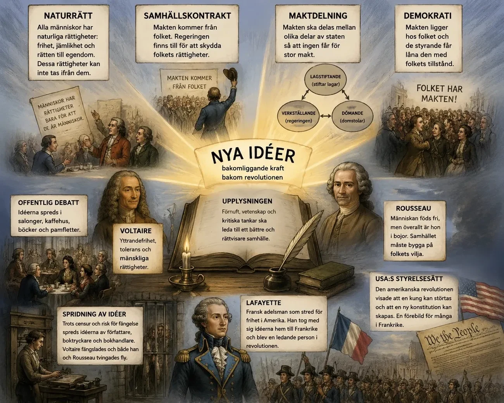
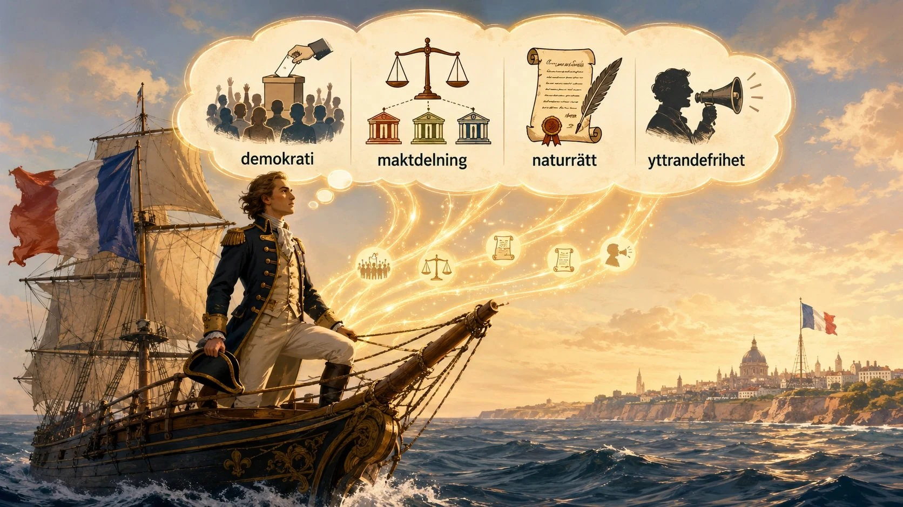
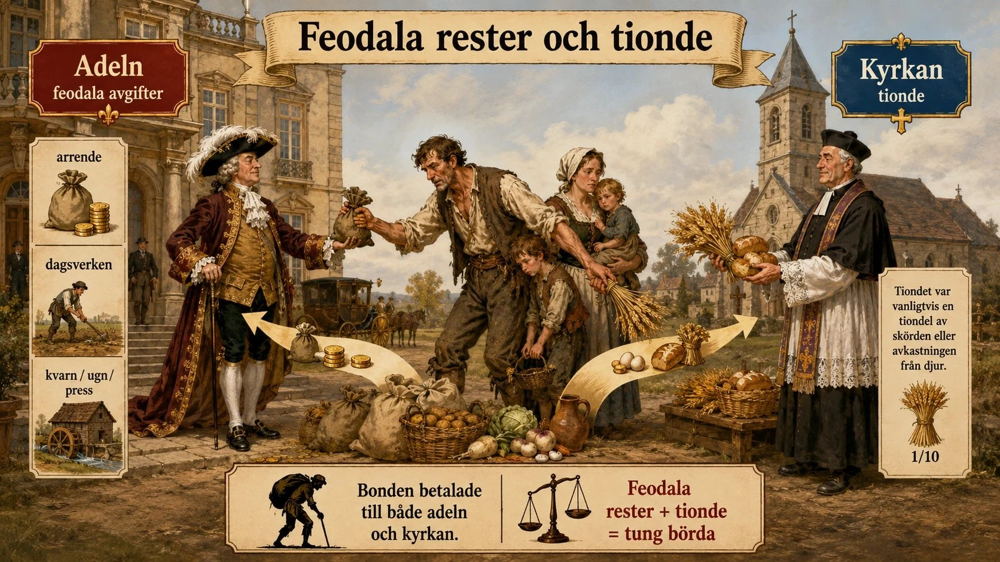
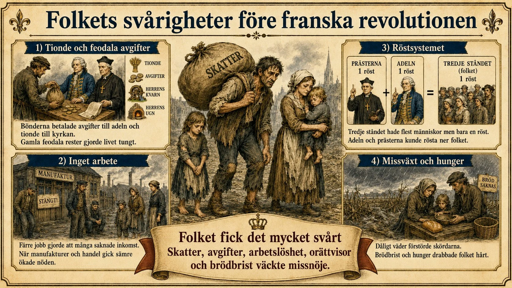
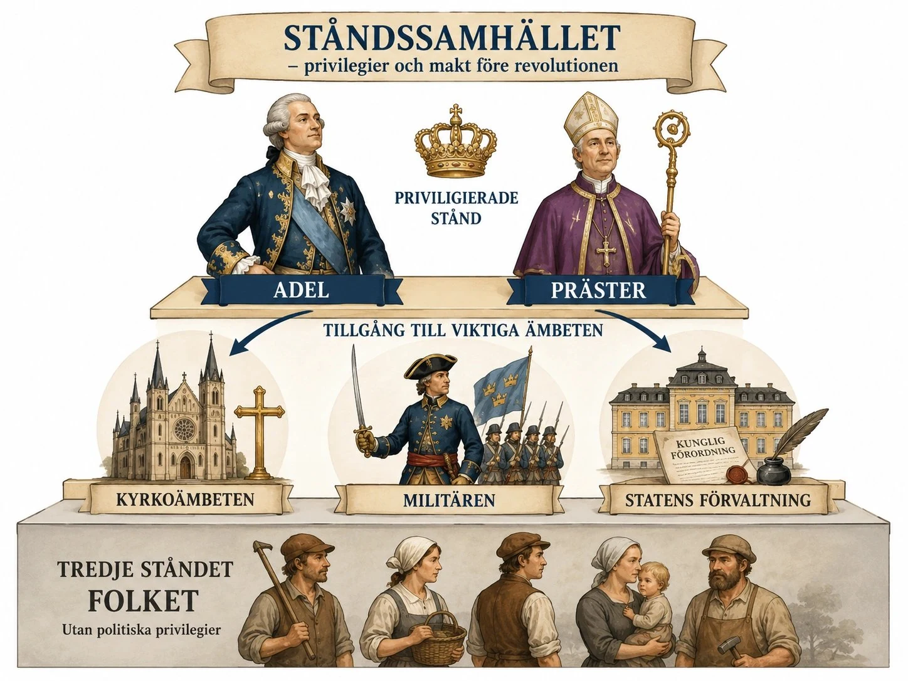
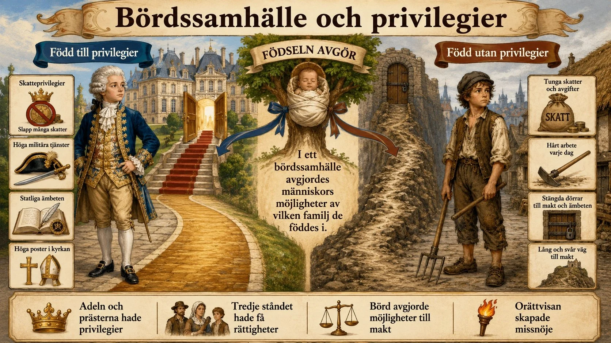
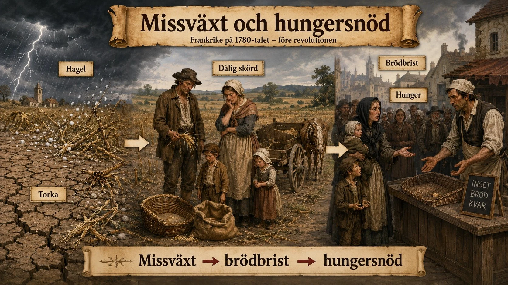

— varför revolutionen kom: idéer, ekonomi, makt och den utlösande krisen —
Under 1700-talet spreds nya idéer i Europa. Tiden kallas upplysningen. Filosofer började ifrågasätta kungens makt, kyrkan och ståndssamhället. De menade att samhället borde vara mer rättvist. Flera av deras idéer blev orsaker till franska revolutionen.
Naturrätt betyder att alla människor har vissa rättigheter — bara för att de är människor. Rättigheterna kommer inte från kungen eller kyrkan. Upplysningstänkarna menade att alla har rätt till liv, frihet och egendom.
I Frankrike hade människor olika rättigheter beroende på vilket stånd de tillhörde. Adeln och prästerna hade förmåner. Det tredje ståndet betalade mycket skatt. Naturrätten fick folk att fråga: varför ska vissa ha mer rättigheter än andra? Idén gav människor argument att kräva frihet och jämlikhet.
Samhällskontrakt betyder att makten bygger på ett avtal mellan folket och de som styr. Folket lyder lagarna. I gengäld ska staten skydda folket och styra för deras bästa. Filosofen Rousseau skrev om detta.
I Frankrike trodde man att kungen fått sin makt av Gud. Samhällskontraktet sa något annat: makten kommer från folket. Då började människor fråga varför kungen skulle bestämma ensam. Om staten styrde orättvist kunde folket kräva förändring.
Rousseau gick ett steg längre. Han frågade: om samhället bygger på ett avtal, vem ska då bestämma över lagarna? Hans svar var att makten måste komma från folket. Landet var inte kungens egendom.
Rousseau kallade detta för folkviljan. Lagarna skulle visa vad som var bäst för hela folket — inte bara för kungen och adeln. I Frankrike hade det tredje ståndet flest människor men minst makt. Det blev orättvist om makten egentligen kom från folket. Därför krävde många att folket skulle få vara med och bestämma.
Maktdelning betyder att makten delas upp, så att ingen får all makt. Filosofen Montesquieu menade att ett land behöver tre delar: en som stiftar lagar, en som styr landet, och en som dömer i domstol. Delarna ska kontrollera varandra.
I Frankrike hade kungen nästan all makt. Han styrde över lagar, domstolar och skatter. Montesquieus idé fick folk att ifrågasätta detta. Om makten delades upp kunde folket få mer inflytande och rättvisan bli starkare.
Voltaire var en känd upplysningstänkare. Han kritiserade orättvisor och att människor inte fick tänka och tala fritt. Voltaire kämpade för yttrandefrihet och religionsfrihet. Han menade att alla har rätt att kritisera makten utan att straffas.
I Frankrike bestämde kungen och kyrkan vad folk fick säga och skriva. Voltaires idéer var farliga för dem. Hans tankar spreds ändå — genom böcker, pamfletter och samtal. Voltaire gav människor argument för ett öppnare samhälle med mer frihet.

Naturrätt betyder att människor har vissa rättigheter bara för att de är människor. Dessa rättigheter kommer inte från kungen, kyrkan eller staten. Upplysningstänkare menade att människor till exempel har rätt till liv, frihet och egendom. Det var en ny och farlig idé i ett samhälle där kungen, adeln och kyrkan hade mycket makt. I Frankrike före revolutionen hade människor olika rättigheter beroende på vilket stånd de föddes in i.
Adeln och prästerna hade privilegier, medan det tredje ståndet fick betala mycket skatt och hade mindre inflytande. Naturrätten gjorde att fler började fråga varför vissa människor skulle ha större rättigheter än andra. Om alla människor har naturliga rättigheter borde samhället också behandla människor mer lika. Därför blev naturrätten en orsak till franska revolutionen, eftersom den gav folket idéer och argument mot den gamla samhällsordningen. Naturrätten hjälpte alltså människor att kräva frihet, jämlikhet och politiskt inflytande.
Samhällskontrakt betyder att makten i ett samhälle bygger på ett slags avtal mellan folket och de som styr. Folket accepterar att lyda lagar och följa staten, men staten måste då skydda folket och styra för deras bästa. Det var en viktig upplysningsidé, särskilt hos Jean-Jacques Rousseau. I ett samhälle som Frankrike var detta en farlig tanke, eftersom kungen ansågs ha fått sin makt av Gud. Samhällskontraktet sa i stället att makten egentligen kommer från folket.
Det gjorde att människor började fråga varför kungen skulle få bestämma ensam. Om staten inte skyddade folket eller styrde rättvist kunde folket kräva förändring. Många i det tredje ståndet tyckte att kungen och ståndssamhället gynnade adeln och prästerna på folkets bekostnad. Därför blev samhällskontraktet en orsak till franska revolutionen, eftersom det gav människor argument för att ifrågasätta kungamakten. Idén hjälpte folket att kräva mer inflytande, rättvisa lagar och ett samhälle där makten inte bara låg hos kungen.
Rousseaus idéer om folkvilja och demokrati kan ses som en fortsättning och utveckling av tanken om samhällskontraktet. John Locke hade betonat att staten måste skydda människors naturliga rättigheter, till exempel liv, frihet och egendom. Rousseau tog idén vidare och frågade: om samhället bygger på ett avtal mellan folket och staten, vem ska då egentligen bestämma över lagarna? Hans svar var att makten måste utgå från folket. Kungen skulle alltså inte styra över folket som om landet var hans egendom, utan samhället skulle styras efter folkets gemensamma vilja.
Rousseau kallade detta för folkviljan. Med det menade han att lagar och beslut skulle uttrycka det som var bäst för folket som helhet, inte bara det som gynnade kungen, adeln eller kyrkan. Detta blev en farlig idé i Frankrike, eftersom landet fortfarande styrdes av en enväldig kung och ett ståndssamhälle där människor hade olika rättigheter beroende på börd. Om makten egentligen kom från folket blev det orimligt att det tredje ståndet, som var den största delen av befolkningen, hade så lite politiskt inflytande.
Därför blev Rousseaus tankar en orsak till franska revolutionen. De gav människor argument för att kräva att folket skulle vara med och bestämma, att privilegier skulle avskaffas och att lagarna skulle gälla mer lika för alla. Man kan därför säga att samhällskontraktet först ifrågasatte kungens gudagivna makt, medan Rousseaus folkvilja tog nästa steg: om makten kommer från folket, då måste folket också få politiskt inflytande.
Maktdelning betyder att makten i ett samhälle delas upp mellan flera olika delar, så att ingen person eller grupp får all makt. Upplysningstänkaren Montesquieu menade att ett land borde ha en lagstiftande makt, en verkställande makt och en dömande makt. Den lagstiftande makten skapar lagar, den verkställande makten styr landet och ser till att lagarna följs, och den dömande makten avgör om någon har brutit mot lagen. Tanken var att dessa makter skulle kontrollera varandra. På så sätt kunde man minska risken för att en kung eller regering styrde orättvist.
I Frankrike före revolutionen var mycket makt samlad hos kungen. Han kunde påverka lagar, styre, domstolar och skatter, samtidigt som adeln och kyrkan hade stora privilegier. Montesquieus idé om maktdelning gjorde att människor började ifrågasätta om det var rimligt att kungen hade så stor makt. Om makten delades upp skulle folket och deras representanter kunna få större inflytande och rättssäkerheten bli starkare. Därför blev maktdelning en orsak till franska revolutionen, eftersom idén gav människor argument för att begränsa kungamakten och skapa ett mer rättvist politiskt system.
Voltaire var en av upplysningstidens mest kända tänkare. Han kritiserade maktmissbruk, orättvisor och att människor inte fick tänka, skriva och tala fritt. Voltaire kämpade särskilt för yttrandefrihet, religionsfrihet och tolerans. Han menade att människor måste ha rätt att kritisera makthavare, kyrkan och samhällets orättvisor utan att straffas. Detta var en farlig tanke i Frankrike, eftersom kungen och kyrkan hade stor kontroll över vad människor fick säga och skriva.
Voltaires idéer blev en orsak till franska revolutionen eftersom de hjälpte människor att ifrågasätta den gamla samhällsordningen. Om människor har rätt att tänka fritt och uttrycka sina åsikter blir det svårare för kungen och kyrkan att styra utan kritik. Hans tankar spreds genom böcker, pamfletter, salonger och samtal, trots censur och förbud. Voltaire gav alltså människor argument för att kräva ett öppnare samhälle med mer frihet, mindre förtryck och större respekt för individens rättigheter. På så sätt bidrog hans idéer till den kritik mot kungamakten, kyrkans makt och ståndssamhällets orättvisor som ledde fram till franska revolutionen.
Upplysningens idéer var en av de viktigaste bakomliggande orsakerna till revolutionen. Filosofer och författare började ifrågasätta sådant som tidigare hade setts som självklart: kungens envälde, kyrkans starka ställning, censuren och ståndssamhällets privilegier.
Idén om naturrätt var central. Den byggde på tanken att människor har vissa grundläggande rättigheter bara genom att vara människor. Dessa rättigheter kom inte från kungen och kunde därför inte heller tas ifrån människor hur som helst. Här fanns en direkt kritik mot absolutismen. Om människor har naturliga rättigheter kan kungen inte behandla riket som sin privata egendom.
Idén om samhällskontraktet var också viktig. Den innebar att staten och makthavarna bara är legitima om de styr med folkets samtycke och för folkets bästa. Makten sågs inte längre som något som kom uppifrån, från Gud till kungen, utan som något som ytterst vilade på folket. Det förändrade hela sättet att förstå politik. Om makten kommer från folket kan folket också kräva ansvar av dem som styr.
Maktdelning blev en annan central tanke. I stället för att all makt samlades hos kungen borde den delas upp mellan olika institutioner. En lagstiftande, verkställande och dömande makt skulle kunna kontrollera varandra. Syftet var att förhindra maktmissbruk.
Även tanken om demokrati fick betydelse, även om demokrati på 1700-talet inte betydde allmän rösträtt på samma sätt som i dag. Det viktiga var idén att folket var den egentliga grunden för makten. De styrande hade inte makten av naturen eller av Gud, utan fick låna den med folkets tillstånd.
Voltaire blev särskilt viktig genom sitt försvar av yttrandefrihet och kritik av religiös intolerans, censur och maktmissbruk. Men just därför var dessa idéer farliga för det gamla samhället. Staten försökte stoppa dem genom censur. Författare, boktryckare och bokhandlare kunde fängslas. Voltaire satt själv i fängelse, och både Voltaire och Rousseau tvingades periodvis fly till andra länder.
Ändå gick idéerna inte att stoppa. De spreds genom böcker, pamfletter, brev, salonger och kaffehus. Salonger och kaffehus blev viktiga miljöer för offentlig debatt. Där kunde människor diskutera politik, filosofi och samhällsfrågor. Det växte fram en offentlighet där fler än hovet och staten deltog i samtalet om hur samhället borde styras.
Den amerikanska revolutionen påverkade Frankrike. Den visade att upplysningens idéer kunde fungera i verkligheten. De tretton kolonierna i Nordamerika gjorde uppror mot Storbritannien. Det blev ett exempel på att en kung kunde utmanas och att ett nytt sätt att styra kunde skapas.
Det gjorde kritiken mot Frankrikes gamla samhälle starkare. I Frankrike hade kungen stor makt, och adeln och prästerna hade särskilda förmåner.
USA:s nya styrelsesätt byggde på samma idéer som diskuterades i Frankrike: naturliga rättigheter, folkets inflytande, maktdelning och en konstitution. Många fransmän jämförde USA med Frankrike. Om amerikanerna kunde skapa ett rättvisare samhälle — varför skulle inte fransmännen kunna kräva samma sak?
En viktig länk mellan de två revolutionerna var Lafayette. Han var en fransk adelsman som stred på kolonisternas sida i Amerika. När han kom hem tog han med sig idéer om frihet, rättigheter och folkets makt till Frankrike.

Den amerikanska revolutionen påverkade Frankrike eftersom den visade att upplysningens idéer kunde användas i verkligheten. När de tretton kolonierna gjorde uppror mot Storbritannien blev det ett tydligt exempel på att en kungamakt kunde utmanas och att ett nytt styrelsesätt kunde skapas. Det förstärkte kritiken mot Frankrikes gamla samhällsordning, där kungen hade stor makt och där adel och präster hade särskilda privilegier.
USA:s nya styrelsesätt byggde på idéer som också diskuterades i Frankrike, till exempel naturliga rättigheter, folkets inflytande, maktdelning och en konstitution. Många fransmän började därför jämföra USA med Frankrike. Om amerikanerna kunde skapa ett samhälle där makten begränsades och där folket fick större inflytande, varför skulle inte fransmännen kunna kräva samma sak?
En viktig länk mellan revolutionerna var Lafayette. Han var en fransk adelsman som stred på kolonisternas sida och tog med sig idéer om frihet, rättigheter och folkets makt tillbaka till Frankrike.
Upplysningens idéer blev ännu mer kraftfulla genom den amerikanska revolutionen. När de tretton kolonierna i Nordamerika gjorde uppror mot Storbritannien visade de att en kung kunde utmanas och att ett nytt styrelsesätt kunde byggas.
För många fransmän blev USA ett konkret exempel på att idéer om frihet, rättigheter, konstitution och maktdelning inte bara var teorier. De kunde användas för att skapa ett nytt politiskt system. USA blev därför en förebild, även om det amerikanska samhället hade stora begränsningar och motsägelser, till exempel slaveriet och att många grupper saknade politiska rättigheter.
Frankrike deltog i det amerikanska frihetskriget på kolonisternas sida mot Storbritannien. Det fick två viktiga konsekvenser. För det första blev kriget mycket dyrt och förvärrade den franska statens ekonomiska kris. För det andra kom franska officerare och soldater i kontakt med amerikanska revolutionära idéer.
En viktig person var Lafayette . Han var fransk adelsman men stred på kolonisternas sida och blev allierad med George Washington. När han återvände till Frankrike blev han en symbol för kopplingen mellan den amerikanska och den franska revolutionen. Han tog med sig idéer om frihet och rättigheter, blev medlem av nationalförsamlingen och deltog i arbetet med deklarationen om människans och medborgarens rättigheter . Lafayette visar hur idéer kunde färdas mellan länder och hur en revolution kunde inspirera en annan.
En viktig orsak till franska revolutionen var att Frankrike hade dålig ekonomi. Staten gjorde av med mer pengar än den fick in. Krig hade varit mycket dyrt — till exempel sjuårskriget och stödet till USA. Hovet i Versailles kostade också mycket. Till slut hade staten stora skulder.
Det var svårt att lösa krisen. Frankrike kunde inte bara låna mer pengar, för långivarna trodde inte längre att staten kunde betala tillbaka. Då fanns mest ett alternativ kvar: att höja skatterna. Men folket var redan hårt beskattat. Det tredje ståndet betalade den största delen av skatten. Adeln och prästerna hade förmåner och betalade mycket mindre.
Kungen och hans ministrar ville därför ändra skattesystemet. De ville att även adeln och prästerna skulle betala mer. Men de privilegierade grupperna vägrade. De ville behålla sina gamla rättigheter. De krävde att generalständerna skulle kallas samman — en slags riksdag med de tre stånden. När generalständerna möttes 1789 blev konflikten ännu större.
Samtidigt hade folket det svårt. På landsbygden fanns gamla feodala rester kvar. Bönderna hade skyldigheter från medeltiden. De betalade avgifter till adeln, arbetade gratis åt godsherren och betalade för att använda kvarn, bakugn eller vinpress. Till kyrkan betalade de tionde — en del av skörden. För många bönder kändes det orättvist att de skulle försörja både staten, adeln och kyrkan.
I städerna blev det också svårt. Frankrike hade förlorat kolonier och handeln gick sämre. När färre varor såldes behövdes färre arbetare. Många blev arbetslösa. Samtidigt steg priset på bröd, som var den viktigaste maten. Många arbetade hårt men kunde knappt försörja sina familjer.
Den ekonomiska krisen var alltså mer än ett problem med pengar. Den visade hur orättvist samhället var. Staten behövde pengar, men de som hade makt och förmåner ville inte betala mer. Det tredje ståndet bar den största bördan. Därför växte ilskan mot kungen, adeln och kyrkan.


En viktig orsak till franska revolutionen var att Frankrike hade stora ekonomiska problem. Staten hade under lång tid gjort av med mer pengar än den fick in. Särskilt dyrt hade det varit med krig, till exempel sjuårskriget och Frankrikes stöd till USA under amerikanska frihetskriget. Hovet i Versailles kostade också mycket pengar. Till slut hade staten stora skulder och behövde snabbt få in mer pengar.
Men det var svårt att lösa krisen. Frankrike kunde inte bara fortsätta låna pengar, eftersom staten redan hade stora skulder och långivarna började tvivla på om Frankrike skulle kunna betala tillbaka. Då återstod framför allt ett alternativ: att öka statens inkomster genom skatter. Problemet var att folket redan var hårt beskattat. Det tredje ståndet, alltså bönder, arbetare och borgare, betalade redan den största delen av skatterna. Adeln och prästerna hade däremot många privilegier och betalade mycket mindre.
Därför försökte kungen och hans ministrar reformera skattesystemet. De ville att även adeln och prästerna skulle bidra mer till statens ekonomi. Men de privilegierade grupperna vägrade. De ville behålla sina gamla rättigheter och krävde att generalständerna skulle sammankallas. Det var en riksdag där de tre stånden skulle mötas: präster, adel och tredje ståndet. När generalständerna samlades 1789 blev konflikten ännu större, eftersom tredje ståndet började kräva mer inflytande och rättvisa.
Samtidigt var folkets livssituation svår. På landsbygden fanns många feodala rester kvar. Det betydde att bönderna fortfarande hade gamla skyldigheter från medeltiden. De kunde behöva betala avgifter till adeln, arbeta gratis åt godsherren och betala för att använda kvarn, bakugn eller vinpress. Till kyrkan betalade de också tionde, alltså en del av sin skörd eller inkomst. För många bönder kändes det orättvist att de skulle försörja både staten, adeln och kyrkan.
I städerna blev situationen också svår. Frankrike hade förlorat viktiga kolonier och handeln gick sämre. När färre varor såldes behövde manufakturerna färre arbetare. Det gjorde att fler människor fick svårt att hitta arbete eller förlorade sin inkomst. Samtidigt steg priset på bröd, som var den viktigaste maten för vanligt folk. Många människor arbetade hårt men kunde ändå knappt försörja sina familjer.
Den ekonomiska krisen blev därför mer än ett problem med pengar. Den visade hur orättvist samhället var uppbyggt. Staten behövde mer inkomster, men de som hade mest makt och privilegier ville inte betala mer. Samtidigt bar tredje ståndet den största bördan. Därför växte ilskan mot kungen, adeln, kyrkan och hela ståndssamhället.
Den franska staten var nära bankrutt i slutet av 1780-talet. Det var inte bara en tillfällig brist på pengar, utan en strukturell kris. Staten hade stora skulder efter tidigare krig, särskilt Sjuårskriget och stödet till de amerikanska kolonierna. Samtidigt kostade hovet i Versailles stora summor. Även om hovets kostnader inte ensamt orsakade konkursen blev det en stark symbol för orättvisa och slöseri.
När staten behövde pengar försökte den låna. Men ju mer skuldsatt Frankrike blev, desto svårare blev det att få nya lån. Räntorna steg kraftigt, vilket gjorde att allt större del av statens inkomster gick till att betala gamla skulder. Staten hamnade i en ond cirkel : den behövde låna för att klara sig, men skulderna gjorde nya lån dyrare och svårare att få.
Den självklara lösningen hade varit att reformera skattesystemet. Men där låg det stora problemet. Skattesystemet var ineffektivt och orättvist. De grupper som hade störst resurser, särskilt delar av adeln och kyrkan, var ofta undantagna från många skatter. Samtidigt bar tredje ståndet den tyngsta bördan. Bönderna beskattades hårt, men även handel och produktion kunde drabbas av olika avgifter och tullar.
Detta gjorde att staten inte kunde få in pengar på ett effektivt sätt. Frankrike var inte fattigt som land, men staten hade svårt att beskatta rikedomarna på ett rättvist och fungerande sätt. Det är en viktig skillnad. Revolutionen berodde alltså inte bara på att pengar saknades, utan på att det politiska systemet hindrade staten från att lösa den ekonomiska krisen.
Frankrikes ekonomiska problem fanns inte bara på statsnivå. Även i samhället fanns svårigheter. Frankrike hade problem med konkurrens från Storbritannien, särskilt inom textilproduktion. Storbritannien hade utvecklat effektivare former av produktion och kunde konkurrera med franska varor. Det drabbade delar av Frankrikes förlagssystem, manufakturer och textilindustri.
När produktionen gick dåligt ökade arbetslösheten. I vissa sammanhang nämns omkring 80 000 arbetslösa inom utsatta sektorer. För människor i städerna innebar arbetslöshet att de snabbt kunde hamna i akut fattigdom. De hade ofta ingen egen jord och var beroende av lön för att köpa mat. När lönerna försvann och brödpriserna steg blev situationen explosiv.
Detta är viktigt eftersom revolutionen inte bara drevs av idéer bland utbildade borgare eller missnöje bland bönder. Den drevs också av stadsbefolkningens kamp för överlevnad. Hungriga, arbetslösa och politiskt upprörda människor i städerna blev en kraft som kunde pressa fram händelserna.
De långsiktiga problemen hade kanske kunnat fortsätta ett tag till om inte Frankrike drabbats av en akut försörjningskris. År 1788 kom svår torka, och sedan förstördes stora delar av skördarna av hagelstormar. Vintern 1788–1789 blev dessutom extremt kall, en av de kallaste på över 90 år . Det gjorde transporter svårare, förvärrade bristen på livsmedel och bidrog till att mjöl- och brödpriserna steg.
Bröd var basföda för stora delar av befolkningen. För fattiga hushåll kunde brödet vara helt avgörande för överlevnaden. När priset steg kunde familjer tvingas lägga 80–90 procent av sina inkomster på bröd . Då fanns nästan ingenting kvar till hyra, kläder, ved eller andra nödvändigheter.
Detta skapade desperation. Brödbrist var inte bara ett ekonomiskt problem, utan ett politiskt problem. I ett samhälle där kungen sågs som ansvarig för ordning och försörjning kunde hunger snabbt bli kritik mot makten. När människor plundrade bagerier eller krävde lägre priser handlade det inte bara om mat, utan också om rättvisa. Många ansåg att myndigheterna, spekulanter eller rika spannmålshandlare svek folket.
Missväxten blev därför en utlösande faktor. Den skapade den omedelbara kris som gjorde att redan existerande missnöje förvandlades till handling.
En viktig orsak till revolutionen var hur makten var fördelad i Frankrike. Frankrike var ett ståndssamhälle. Det betyder att människor delades in i grupper, eller stånd, med olika rättigheter. De tre stånden var prästerna, adeln och det tredje ståndet.
Prästerna och adeln hade många privilegier — särskilda förmåner. Många av dem betalade lite eller ingen skatt. De kunde få höga tjänster i kyrkan, militären och staten. Det tredje ståndet var nästan hela befolkningen: bönder, arbetare, borgare och hantverkare. De betalade mest skatt men hade minst makt.
Frankrike var också ett bördssamhälle. Det betyder att vilken familj du föddes i avgjorde dina möjligheter. Den som föddes som adelsman fick fördelar direkt. Den som föddes som bonde eller arbetare hade mycket svårare att få makt — även om personen var rik eller skicklig. Många tyckte att samhället var orättvist.
Detta skapade missnöje hos borgarklassen. Många borgare hade blivit rika. De var köpmän, jurister, läkare eller företagare. De hade pengar och utbildning, men ändå ingen verklig politisk makt. Många påverkades av upplysningens idéer. Därför började de kräva mer inflytande.
När generalständerna kallades samman 1789 blev orättvisan tydlig. Generalständerna var en slags riksdag med de tre stånden. Men röstningen gynnade prästerna och adeln. Varje stånd hade en röst:
Prästerna och adeln kunde alltså rösta 2 mot 1. Det tredje ståndet kunde bli nedröstat — trots att det var nästan hela Frankrikes befolkning. Många i tredje ståndet ville därför rösta per person istället för per stånd. Då skulle deras stora antal betyda något.
Konflikten om röstningen var viktig. Den handlade om vem som egentligen hade rätt att bestämma i Frankrike. Skulle de gamla stånden styra? Eller skulle makten bygga på folket? Så blev maktens orättvisa fördelning en viktig orsak till revolutionen.


En viktig orsak till franska revolutionen var hur makten var fördelad i det franska samhället. Frankrike var ett ståndssamhälle. Det betyder att människor delades in i olika grupper, eller stånd, med olika rättigheter och skyldigheter. De tre stånden var prästerna, adeln och det tredje ståndet.
Prästerna och adeln hade många privilegier. De hade alltså särskilda fördelar i samhället. Många av dem betalade lite eller ingen skatt, och de kunde få höga tjänster inom kyrkan, militären och statens förvaltning. Det tredje ståndet bestod av nästan hela befolkningen: bönder, arbetare, borgare, hantverkare och andra vanliga människor. De betalade den största delen av skatterna, men hade minst politiskt inflytande.
Samhället var också ett bördssamhälle. Det betyder att människors möjligheter till stor del avgjordes av vilken familj de föddes i. Den som föddes som adelsman fick stora fördelar redan från början. Den som föddes som bonde, arbetare eller borgare hade mycket svårare att få makt, även om personen var rik, utbildad eller skicklig. Många upplevde därför att samhället inte byggde på rättvisa eller förmåga, utan på börd och gamla privilegier.
Detta skapade särskilt stort missnöje hos borgarklassen. Många borgare hade blivit ekonomiskt starka. De kunde vara köpmän, jurister, läkare, företagare eller ämbetsmän. De hade pengar, utbildning och kunskap, men de saknade ändå verklig politisk makt. Många av dem påverkades av upplysningens idéer om frihet, jämlikhet och folkets rätt att vara med och styra. Därför började de kräva inflytande som motsvarade deras betydelse i samhället.
När generalständerna kallades samman år 1789 blev orättvisan tydlig. Generalständerna var en slags riksdag där de tre stånden möttes. Men röstningen var uppbyggd på ett sätt som gynnade prästerna och adeln. Varje stånd hade en röst var:
Det betydde att prästerna och adeln tillsammans kunde få 2 röster mot 1. Det tredje ståndet kunde alltså bli nedröstat, trots att det representerade nästan hela Frankrikes befolkning. Många i tredje ståndet tyckte därför att röstningen borde ske per person i stället för per stånd. Då skulle deras större antal få betydelse.
Konflikten om röstningen blev mycket viktig. Den handlade inte bara om hur man skulle fatta beslut. Den handlade om vem som egentligen hade rätt att bestämma i Frankrike. Skulle landet styras av de gamla stånden, där präster och adel hade störst makt? Eller skulle makten bygga på folket som helhet?
På så sätt blev maktens orättvisa fördelning en viktig orsak till revolutionen. Det tredje ståndet bar samhällets största bördor, men hade minst inflytande. När de började kräva rättvisa och politisk makt utmanades hela det gamla ståndssamhället.
Frankrike före revolutionen var ett ståndssamhälle. Det innebar att människor delades in i grupper med olika rättigheter, skyldigheter och möjligheter. De tre stånden var prästerna, adeln och det tredje ståndet. Prästerna och adeln kallades frälsestånden, eftersom de till stor del var befriade från många av de skatter som vanligt folk behövde betala. Ordet frälse betyder just befriad — i detta sammanhang befriad från skatt.
Det tredje ståndet bestod av nästan hela befolkningen. Här fanns bönder, hantverkare, arbetare, tjänstefolk, småhandlare, köpmän, jurister, läkare och andra utbildade grupper. Det var alltså en mycket bred och splittrad grupp. En fattig bonde och en rik advokat tillhörde båda tredje ståndet, men deras liv såg mycket olika ut. Det som förenade dem var att de saknade de privilegier som präster och adel hade.
Samhället var också ett bördssamhälle . Det betyder att människans ställning i hög grad avgjordes av vilken familj hon föddes in i. Den som föddes som adelsman fick tillgång till status, ämbeten och makt på ett helt annat sätt än den som föddes som bonde eller borgare. Det var alltså inte främst kunskap, duglighet eller utbildning som avgjorde människors möjligheter, utan börd och arv.
Detta blev allt svårare att försvara under 1700-talet. Borgarklassen växte i ekonomisk betydelse. Många borgare var välutbildade, rika och vana att tänka rationellt kring handel, ekonomi och samhälle. De kunde vara advokater, läkare, köpmän, ämbetsmän eller företagare. Men trots att de hade utbildning och pengar saknade de fortfarande verkligt politiskt inflytande. Här uppstod en viktig spänning: en grupp som blev allt viktigare ekonomiskt och intellektuellt var fortfarande underordnad politiskt.
Frankrike styrdes som en absolut monarki. Det innebar att kungen hade mycket stor makt och att det inte fanns ett modernt parlamentariskt system där folket kunde påverka politiken. Kungamakten hade stärkts kraftigt under Ludvig XIV, Kung Sol. Han gjorde Versailles till centrum för makten och lät hovet bli en symbol för kungens överlägsenhet. Adeln drogs till hovet och blev beroende av kungens gunst, samtidigt som kungamakten framställdes som nästan helig.
Problemet var att detta system fungerade sämre när staten hamnade i djup kris. Ludvig XVI ärvde en stark kungamakt, men han saknade ofta den beslutsamhet och politiska skicklighet som krävdes för att hantera situationen. Han förstod att staten behövde mer pengar, men vågade inte fullt ut utmana adelns och prästerskapets privilegier. Därför blev kungamakten paradoxal : på pappret var den mycket stark, men i praktiken blev den handlingsförlamad när den mötte motstånd från de privilegierade grupperna.
Detta är en viktig fördjupning. Revolutionen bröt inte ut för att kungen var helt maktlös, utan för att den starka kungamakten inte längre kunde lösa landets problem. Absolutismen kunde fungera så länge systemet höll ihop, men när ekonomi, sociala motsättningar och idéer förändrades blev den ett hinder. Det fanns inga fungerande politiska kanaler där olika grupper kunde lösa konflikter fredligt och långsiktigt.
De flesta fransmän var bönder, och för många av dem var vardagen hård redan före krisen 1788–1789. Bönderna behövde ofta betala flera olika typer av avgifter samtidigt. De betalade skatt till staten , tionde till kyrkan och olika avgifter till godsherren . Tionde var en kyrklig avgift som innebar att bönderna skulle lämna en del av sin produktion eller inkomst till kyrkan.
Utöver detta fanns det feodala strukturer kvar på landsbygden. Även om medeltiden var över levde många gamla rättigheter och skyldigheter kvar. Bönder kunde behöva betala för att använda godsherrens kvarn, vinpress, broar, vägar eller floder. De kunde också tvingas utföra dagsverken , alltså arbeta gratis åt godsherren vissa dagar. I vissa områden kunde bönderna dessutom behöva bidra med arbete vid vägbyggen.
Under 1700-talet ökade trycket på bönderna. En viktig orsak var att delar av adeln själva fick ekonomiska problem. När deras inkomster inte räckte började vissa godsherrar leta fram gamla feodala rättigheter och kräva in avgifter som tidigare kanske inte hade använts lika hårt. Detta kallas ibland den feodala reaktionen . För bönderna kunde det upplevas som att bördorna blev tyngre samtidigt som adeln fortsatte att vara skattebefriad och politiskt privilegierad.
Detta skapade ett djupt missnöje på landsbygden. Bönderna reagerade inte bara mot fattigdom i allmänhet, utan mot ett system där de upplevde att de arbetade och betalade medan andra levde på privilegier.
De bakomliggande problemen i Frankrike hade funnits länge. Men vädret och missväxten gjorde krisen akut. Samhället var redan pressat av höga skatter, fattigdom och orättvisor. När vädret försämrades blev vardagen snabbt mycket svårare.
År 1788 drabbades Frankrike först av svår torka. Grödorna växte dåligt. Sedan kom kraftiga hagelstormar som förstörde stora delar av skörden. Vintern 1788–1789 blev extremt kall — en av de kallaste på länge. Kylan gjorde det svårt att transportera mat.
När skörden blev dålig steg priset på mjöl och bröd. Bröd var basmat för många. För fattiga familjer var det den viktigaste maten. När brödpriset steg blev det nästan omöjligt att klara sig. För vissa familjer gick 80–90 procent av inkomsten till bröd.
Missväxten skapade alltså inte revolutionen ensam. De djupare orsakerna fanns redan: statens dåliga ekonomi, orättvisa skatter, ståndssamhällets privilegier och folkets svåra liv. Men brödbristen gjorde problemen akuta. När människor inte hade råd med mat växte ilskan snabbt. Därför blev missväxten och brödbristen en utlösande faktor till revolutionen.

De bakomliggande problemen i Frankrike hade funnits länge, men vädret och missväxten gjorde att krisen blev akut. Samhället var redan hårt pressat av höga skatter, fattigdom och stora orättvisor. När de naturgivna förutsättningarna försämrades blev människors vardag snabbt mycket svårare.
År 1788 drabbades Frankrike först av svår torka. Det gjorde att grödorna växte dåligt. Därefter kom kraftiga hagelstormar som förstörde stora delar av skördarna. Vintern 1788–1789 blev dessutom extremt kall, en av de kallaste på mycket länge. Kylan gjorde det svårare att transportera mat, samtidigt som förråd och skördar inte räckte till.
När skördarna blev dåliga steg priset på mjöl och bröd. Bröd var basföda för många människor, och för fattiga familjer kunde det vara den viktigaste maten. I vanliga fall gick redan en stor del av inkomsten till mat, men när brödpriset steg blev det nästan omöjligt att klara sig. För vissa familjer kunde 80–90 procent av inkomsten gå till bröd.
Missväxten skapade alltså inte revolutionen ensam. De djupare orsakerna var redan där: statens dåliga ekonomi, skattesystemets orättvisor, ståndssamhällets privilegier och folkets svåra livssituation. Men brödbristen gjorde problemen akuta. När människor inte längre hade råd med mat ökade ilskan snabbt mot kungen, skatterna och det orättvisa samhället. Därför blev missväxten och brödbristen en utlösande faktor till franska revolutionen.
Flera finansministrar försökte lösa krisen genom reformer. Den mest rimliga lösningen var att även de privilegierade stånden skulle bidra mer. Men adeln och andra mäktiga grupper gjorde motstånd. De ville inte förlora sina skatteprivilegier.
När kungen och hans ministrar försökte förändra systemet hävdade adeln att nya skatter bara kunde beslutas av generalständerna. Detta var en farlig strategi. Adeln trodde att den kunde använda gamla politiska regler för att stoppa kungens reformer och försvara sina privilegier. Men genom att kräva att generalständerna skulle kallas in öppnade de för en mycket större politisk konflikt.
Generalständerna hade inte sammanträtt sedan 1614. När de kallades in 1789 väcktes därför enorma förväntningar. Många började skriva klagomålslistor och diskutera hur Frankrike borde förändras. Frågan handlade snart inte bara om skatter, utan om hela samhällsordningen.
Generalständernas röstningssystem visade det gamla samhällets orättvisa. Varje stånd hade en röst: prästerna en, adeln en och tredje ståndet en. Prästerna hade ungefär 300 representanter, adeln ungefär 300 och tredje ståndet ungefär 600. Men trots att tredje ståndet hade dubbelt så många representanter och representerade nästan hela befolkningen fick de ändå bara en röst som stånd.
Det innebar att präster och adel tillsammans kunde rösta ner tredje ståndet. Därför krävde tredje ståndet att man skulle rösta per person i stället för per stånd . Då skulle deras större antal få verklig betydelse. Denna konflikt blev avgörande eftersom den handlade om själva maktens grund: skulle Frankrike styras enligt gamla ståndsprivilegier eller enligt representation av folket?
En central orsak till revolutionen var att borgarklassen hade vuxit i betydelse men fortfarande saknade politisk makt. Borgarklassen var inte enhetlig, men många inom den hade utbildning, kapital och samhällsposition. De kunde vara jurister, läkare, köpmän, ämbetsmän, bankirer eller företagare.
De påverkades starkt av upplysningens idéer eftersom dessa idéer gav dem ett språk för att kritisera det gamla samhället. Om alla människor hade rättigheter, varför skulle adeln ha särskilda privilegier? Om makt borde bygga på förnuft och samhällsnytta, varför skulle börd väga tyngre än utbildning och kompetens? Om staten behövde pengar, varför skulle de rikaste grupperna skyddas från beskattning?
För borgarklassen var ståndssamhället inte bara orättvist, utan också ineffektivt . Det hindrade dugliga personer från att få inflytande och gjorde att staten styrdes utifrån privilegier i stället för kompetens. Därför blev revolutionen också en kamp mellan ett gammalt bördssamhälle och ett framväxande samhälle där meriter, egendom, utbildning och politisk representation fick större betydelse.
När Ludvig XVI kallade in generalständerna 1789 var hans mål främst att lösa statens ekonomiska problem. Han behövde få igenom nya skatter och skapa förtroende för statens finanser. Men mötet blev något helt annat. Det blev en arena där Frankrikes olika konflikter samlades: skattefrågan, ståndsprivilegierna, folkrepresentationen, upplysningens idéer och missnöjet med absolutismen.
Tredje ståndet ville inte längre acceptera den gamla ordningen. De ansåg att de representerade nationen, eftersom de företrädde nästan hela folket. Konflikten om röstningen blev därför en konflikt om vem som egentligen hade rätt att tala för Frankrike. Var nationen de tre stånden var för sig, eller var nationen folket som helhet?
När tredje ståndet började agera som nationalförsamling hade revolutionen tagit ett avgörande steg. Då handlade det inte längre bara om att reformera skatterna. Då handlade det om att skapa en ny politisk ordning.
Franska revolutionen berodde alltså inte på en enda händelse. Den växte fram ur flera problem som förstärkte varandra :
När kungen kallade in generalständerna 1789 var tanken att lösa statens ekonomiska problem. Men mötet ledde i stället till att frågan om makt, rättvisa och folkets inflytande ställdes på sin spets.
1789 blev året då Frankrikes gamla samhällssystem började falla sönder. I Tema 3 ska vi se vad som faktiskt hände när krisen bröt ut — generalständerna, bollhuseden, Bastiljen och kvinnornas marsch på Versailles.
Franska revolutionen berodde alltså inte på en enda händelse. Den växte fram ur flera problem som förstärkte varandra :
När kungen kallade in generalständerna 1789 var tanken att lösa statens ekonomiska problem. Men mötet ledde i stället till att frågan om makt, rättvisa och folkets inflytande ställdes på sin spets.
1789 blev året då Frankrikes gamla samhällssystem började falla sönder. I Tema 3 ska vi se vad som faktiskt hände när krisen bröt ut — generalständerna, bollhuseden, Bastiljen och kvinnornas marsch på Versailles.
Franska revolutionen bröt ut 1789, men den kan inte förklaras med en enda orsak. Den var resultatet av flera kriser som utvecklades samtidigt och förstärkte varandra. Frankrike hade ekonomiska problem, politiska låsningar, sociala orättvisor, idéer som utmanade det gamla samhället och en akut försörjningskris med missväxt och brödbrist. När dessa faktorer möttes blev situationen explosiv.
För att förstå revolutionen behöver man skilja mellan bakomliggande orsaker och utlösande orsaker . De bakomliggande orsakerna var sådant som hade byggts upp under lång tid: absolutismen, ståndssamhället, adelns och kyrkans privilegier, statens skulder, borgarklassens brist på politiskt inflytande och upplysningens nya idéer. De utlösande orsakerna var de händelser som gjorde att krisen bröt ut just 1789: statens akuta konkursrisk, missväxten, brödbristen, kallelsen till generalständerna och konflikten om hur Frankrike skulle styras.
Revolutionen blev därför inte bara ett hungeruppror, inte bara en ekonomisk kris och inte bara ett idéuppror. Den blev allt detta på samma gång.
Det är lätt att säga att franska revolutionen berodde på fattigdom, brödbrist eller upplysningen. Men en fördjupad förklaring måste visa hur orsakerna samverkade .
Upplysningens idéer gav människor argument mot absolutism och privilegier. Den amerikanska revolutionen visade att sådana idéer kunde omsättas i verkligheten. Borgarklassen hade utbildning och ekonomisk makt men saknade politiskt inflytande. Bönderna pressades av skatter, tionde och feodala avgifter. Staten var nära konkurs men kunde inte reformera skattesystemet eftersom de privilegierade grupperna gjorde motstånd. Generalständerna kallades in för att lösa ekonomin men öppnade i stället en kamp om makten. Missväxten och brödbristen gjorde att krisen inte längre kunde skjutas upp.
Det gamla samhället byggde på tanken att vissa grupper hade naturliga privilegier och att kungen stod över folket. Men i slutet av 1700-talet blev detta allt svårare att försvara. Ekonomin krävde reformer, idéerna krävde rättigheter, borgarklassen krävde inflytande, bönderna krävde lättnader och stadsbefolkningen krävde bröd.
Därför blev franska revolutionen en brytpunkt. Den började som en kris för den franska staten men utvecklades till en kamp om hela samhällsordningen. Det var inte bara frågan om vem som skulle betala skatt. Det var frågan om vem som skulle ha makten, vilka rättigheter människor skulle ha och om samhället skulle bygga på börd och privilegier eller på medborgarskap, lag och folkets inflytande .
Laddar övningskort…